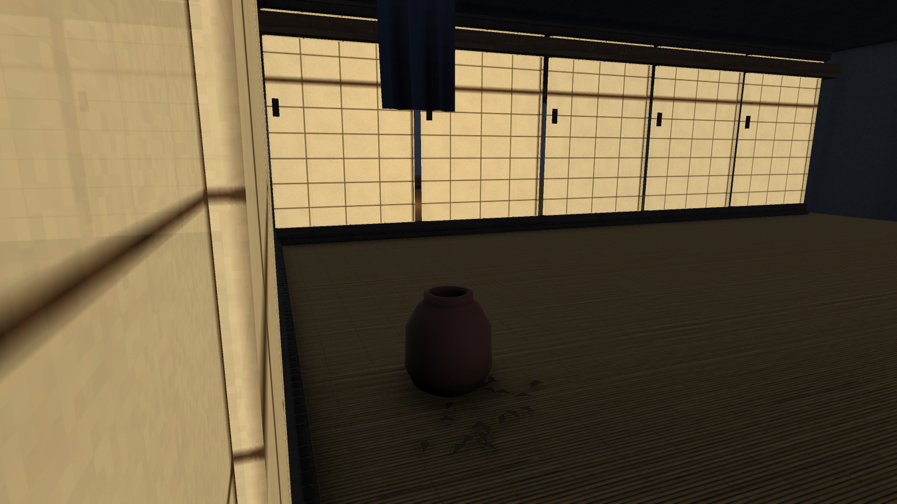
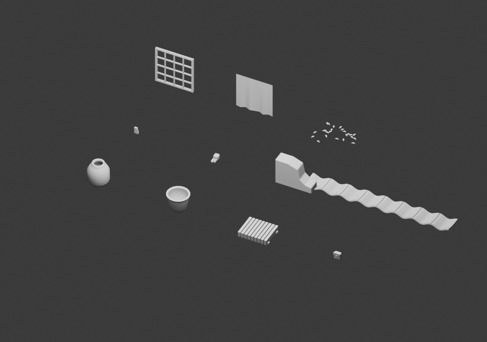

Unseen: visual upgrade
A Blender and Unity polish pass across lighting, character art, animation, architecture, materials, street dressing, environmental motion, combat feedback and camera response.
Implementation and validation notes · Editable Blender kit
Street details

Blender source kit
